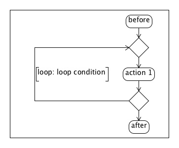

[not implemented]
FOR-statement loops should be shown in the diagram either when there are annotated actions inside or when we have 'highlighted/underlined' the FOR-statement with the //$ notation.
We can add user-defined conditions before or after the FOR-statement. We can also quote the calls to functions/methods in the loop-condition.
a) comments after:
for(Loop = 0; Loop < Parameter; Loop ++) //$
//$ [loop condition]
{
//$ action 1
code
}
a) comments before:
//$ [loop condition]
for(Loop = 0; Loop < Parameter; Loop ++) { //$
//$ action 1
code
}
//$: forces displaying in the diagram the calls to functions/methods inside the conditionStatement
//$ [condition A]: specifies the condition; the square brackets [ ] are required syntax

loop condition = ‘over individual terms’, ‘for all elements of the vector V’, ...